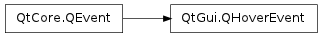
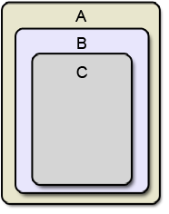

QHoverEvent ¶

Detailed Description ¶
The PySide.QtGui.QHoverEvent class contains parameters that describe a mouse event.
Mouse events occur when a mouse cursor is moved into, out of, or within a widget, and if the widget has the Qt.WA_Hover attribute.
The function PySide.QtGui.QHoverEvent.pos() gives the current cursor position, while PySide.QtGui.QHoverEvent.oldPos() gives the old mouse position.
There are a few similarities between the events QEvent.HoverEnter and QEvent.HoverLeave , and the events QEvent.Enter and QEvent.Leave . However, they are slightly different because we do an update() in the event handler of HoverEnter and HoverLeave .
QEvent.HoverMove is also slightly different from QEvent.MouseMove . Let us consider a top-level window A containing a child B which in turn contains a child C (all with mouse tracking enabled):
Now, if you move the cursor from the top to the bottom in the middle of A, you will get the following QEvent.MouseMove events:
You will get the same events for QEvent.HoverMove , except that the event always propagates to the top-level regardless whether the event is accepted or not. It will only stop propagating with the Qt.WA_NoMousePropagation attribute.
In this case the events will occur in the following way:
- class PySide.QtGui. QHoverEvent ( type , pos , oldPos ) ¶
-
Parameters: - type – PySide.QtCore.QEvent.Type
- pos – PySide.QtCore.QPoint
- oldPos – PySide.QtCore.QPoint
Constructs a hover event object.
The type parameter must be QEvent.HoverEnter , QEvent.HoverLeave , or QEvent.HoverMove .
The pos is the current mouse cursor’s position relative to the receiving widget, while oldPos is the previous mouse cursor’s position relative to the receiving widget.
- PySide.QtGui.QHoverEvent. oldPos ( ) ¶
-
Return type: PySide.QtCore.QPoint Returns the previous position of the mouse cursor, relative to the widget that received the event. If there is no previous position, PySide.QtGui.QHoverEvent.oldPos() will return the same position as PySide.QtGui.QHoverEvent.pos() .
On QEvent.HoverEnter events, this position will always be PySide.QtCore.QPoint (-1, -1).
See also
- PySide.QtGui.QHoverEvent. pos ( ) ¶
-
Return type: PySide.QtCore.QPoint Returns the position of the mouse cursor, relative to the widget that received the event.
On QEvent.HoverLeave events, this position will always be PySide.QtCore.QPoint (-1, -1).
See also